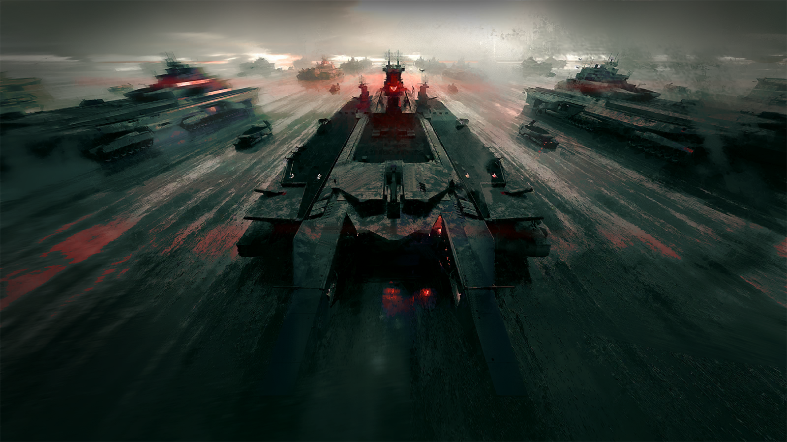

斯乔帕
*乌萨斯方言粗口*——
斯乔帕
稀里糊涂抓了我，耽误我时间，就不知道派人送一程吗？

斯乔帕
又不能一直靠你走，就我俩拖着腿，要走到北原去，等到地方了，估计南边仗都打完了吧！
疑惑的迅驮兽
（喷鼻）

斯乔帕
……算了，也行。打完了就打完了，打不了仗我们也该找点别的营生了。
斯乔帕
唉这地方真是，半天找不到一个有人烟的村子。
疑惑的迅驮兽
（跺脚）
斯乔帕
你还不高兴上了？
疑惑的迅驮兽
（转头）
斯乔帕
什么意思？
疑惑的迅驮兽
（往西边转头）

斯乔帕
你要我往那边走？可那不是往北原去的方向——

斯乔帕
——行，行！咱们过去就是了。
沿着河岸走了半天，直到迅驮兽的蹄铁上都挂了一层新泥，斯乔帕才找到一个似乎有炊烟的村庄。
依照经验，他径直往村子中央的广场上走，一个抽旱烟的老头，正站在那里。
斯乔帕
老先生，你们这村子里有水井吗？

沉默的老人
……
斯乔帕
老先生？
沉默的老人
（抽烟）

斯乔帕
……
斯乔帕
估计耳朵是聋的。我还是找其他人问问吧。
沉默的老人
你说什么？

斯乔帕
呃。
听到声音，斯乔帕觍着脸又凑上去，将身上的口袋掏了个遍，最终只掏出一个木头做的小迅驮兽，塞到老人空着的手心里。
斯乔帕
……我说，老先生，你有没有见过穿得跟我差不多的人？他们可能也骑着迅驮兽，年轻人多，几个人或者十几个人一起。
沉默的老人
有名字没有？
斯乔帕
也许……“奥列格”？
沉默的老人
没印象。
斯乔帕
那穿我这样衣裳的库兰塔，或者埃拉菲亚呢？
沉默的老人
嗯……
沉默的老人
记不得了。记不清。
沉默的老人
但你说库兰塔和埃拉菲亚，倒是有这么一伙人，有时候过来借粮。
沉默的老人
两天前就来过。
斯乔帕
！
斯乔帕
他们驻扎——都住在哪儿，您知道吗？
沉默的老人
知道啊，咋不知道。
老人伸手指向村北。
沉默的老人
喏，朝那边走，过一大片沼泽地，再看见枯了的柳树林，后边就是他们住的地方了。
沉默的老人
你这么一问，我倒确实想起有人说，他们是逃兵——
斯乔帕
……如果他们的确是我认识的那些人，那么不，他们绝不是逃兵。
斯乔帕
总之，谢谢您。
然而一路走过去，直到天已经完全黑掉，斯乔帕才终于在一片倒伏的柳树枯枝后面，看见营地的火光。
斯乔帕
这鬼地方居然还真有营地——

？？？
别动！
斯乔帕
……
斯乔帕
我没拿武器，奥列格。
？？？
……妈的。

奥列格
（低声）你居然真的还活着！

奥列格
你他妈——
奥列格
你他妈跑哪儿去了？
斯乔帕
炸完叶甫根尼之后吗？找水去了。

奥列格
什么？
斯乔帕
我可不是一个人回来的。来，见见我最新的好兄弟——
疑惑的迅驮兽
咴。
奥列格
……
斯乔帕
他说他渴了。说真的，咱们这儿至少得有水喝吧？

奥列格
喂，大伙！你们猜谁回来了！
疑惑的自由民
谁回来了？
奥列格
维伊！
疑惑的自由民
什么？等等，你是说——
兴奋的自由民
头儿！是头儿回来了？
疑惑的自由民
首领回来了？！
奥列格
我早晚让你们统一称呼——
斯乔帕
你们都在这儿呢。是我，如假包换的斯乔帕·拉辛，回来——
兴奋的自由民
但首领不是去炸那个该死的老家伙叶甫根尼了吗？他说：“不成功便成仁！”
斯乔帕
我什么时候说过？
疑惑的自由民
首领没有回来，斯乔帕·拉辛死了！那现在回来的，是谁？
斯乔帕
喂——
兴奋的自由民
当然是维伊！
奥列格
没错，维伊！
自由民们
维伊！
自由民们
维伊从那条路的尽头回来了！
奥列格
维伊！
自由民们
——有人穿越了黑幕♪
自由民们
见过了死亡♪
自由民们
这片大地便暂时又多活了一日♪
自由民们
我们，又多自由了一天！
兴奋的自由民
这下，我们首领就是维伊——看还有谁敢对我们怎么样！
斯乔帕
……唉，也行吧。
斯乔帕
至少这话我爱听。

奥列格
好了，维伊。现在我们终于碰头了，下一步要做什么，你总该有点计划吧？
斯乔帕
计划嘛……倒还真有。
斯乔帕
就是不知道各位，有没有胆量听？

第四集团军军官
元帅，第一集团军的军队正在向圣骏堡开动。
第四集团军军官
从部队规模来看，我们估计第一集团军至少出动了七成的兵力。他们的进军方向将正面碰上第二集团军的阵线。
第四集团军军官
而且，他们的旗舰在公开频道不间断地向所有战舰和移动城市发送消息——
第四集团军军官
“费奥多尔陛下将亲自讨伐叛军，重返圣骏堡。”

叶甫根尼
事到如今，运气依然在光顾乌萨斯的上一位皇帝。
叶甫根尼
我们错过了将皇帝和他的部队一网打尽的机会，这一天迟早会来的。

叶甫根尼
不……我甚至怀疑，就算我们真的当众砍下了皇帝的脑袋，那位议长大人依然有能耐拉出一支军队来反对我们。
叶甫根尼
叶莉萨维塔掌握了圣骏堡，换来的不过是三、七两个集团军的按兵不动。相比之下……伊斯拉姆·维特，了不起。
第四集团军军官
元帅，我们要出兵支援第二集团军吗？
叶甫根尼
当然。虽然不过是表面功夫，我们还是要尽到盟友的义务。
叶甫根尼
等到他们开始正面交火后我们就派出援军。
叶甫根尼
我也想看看，大名鼎鼎的斯韦特兰纳元帅除了政治手腕之外，到底还是不是一个军人？
第四集团军军官
是。
叶甫根尼
这就是“投入火炉的最后一块柴火”了……
叶甫根尼
父亲，您说的不对……乌萨斯需要的不是投机，是伟大的意志，还有能将意志贯彻下去的手腕。
叶甫根尼
我比您更深刻地认识到了这一点，所以我站在了比您更高的地方。

叶甫根尼
为了乌萨斯的未来，我会把这些旧时代的残余，还有您当年犯下的错，彻彻底底地打扫干净。
叶甫根尼
我会成为乌萨斯的利爪，也会为乌萨斯重铸脊梁。

塔露拉
我们马上就要进入交战范围了。
塔露拉
各位，请同步情况。
西尔卡
第一集团军的战舰已经出现在了预定地点，那个元帅倒的确没有食言。
西尔卡
这种规模的进军一定会被敌方察觉，就别指望能打他们一个措手不及了。
塔露拉
战术能取得的优势毕竟是有限的，真正要赢下战争，还是要靠打仗的人。
塔露拉
米拉娜，你那边如何？
米拉娜
雷德和九都和我在一起，费奥多尔的位置保密且安全。
米拉娜
第一集团军的广播一定程度上帮我们吸引了火力，敌军应该猜不到费奥多尔会和我们一起行动。
塔露拉
虽然很不愿意这么说……
塔露拉
米拉娜，一定要保护好费奥多尔。
米拉娜
明白。
米拉娜
但是，塔露拉……你呢？
塔露拉
没关系，我们不是早就说好了吗？
米拉娜
……保重。
米拉娜
我们在圣骏堡见。
塔露拉
……嗯。

拉夫连
既然我们这一次是奔着给叶甫根尼的脑袋开瓢去的，只靠不怕死是不行的，我们得提前做好准备。
拉夫连
就算我们现在和第一集团军合作，我们的军力比起二四联军还是处于绝对的劣势。
拉夫连
我们仅有的机会，是分别击破。

拉夫连
哼，斯韦特兰纳肯定会以更熟悉第二集团军为由主动要求去对付他们。在我看来，第四集团军才是真正的狠角色。
塔露拉
那就把第四集团军交给我们。

西尔卡
我们和叶甫根尼，有很大一笔血债要算。
拉夫连
好。可就算我信你们够有种，你们又打算怎么对付叶甫根尼的高速战舰？
塔露拉
我们只要您的一艘突击舰作为掩护，请相信，我们可以给第四集团军造成足够的麻烦。
塔露拉
到那个时候，就是您的战舰给他们造成重创的机会。

拉夫连
你倒是比我还更有信心一点。

赫拉格
可我们最终的目的，也不是正面打败他们。
赫拉格
只要争取到一个机会，让我们的人能够护送皇帝进入圣骏堡，局势就会得到改变。
赫拉格
圣骏堡城内的那些抵抗者，对我们而言，也是一支援军。

Mantra
我们的干员被困在圣骏堡城内，目前情况不明。
Mantra
罗德岛无法承诺为正面战场提供帮助，但我们会参与对圣骏堡的救援。
塔露拉
您看到了，拉夫连少将。我们的军力虽然少，可我们的伙伴还有很多。
塔露拉
这样可以打消一点您心里的疑虑了吗？
赫拉格
整合运动应当没有经历过这样规模的战争。
塔露拉
是啊……
塔露拉
可是将军，您应该也没有见过比这力量更悬殊的战争。
赫拉格
我的确从未经历过比当下更加荣耀的战争。

赫拉格
……他一定会遗憾不在这里。

塔露拉
他？
赫拉格
博卓卡斯替……我是为了他，至少有一部分是——

塔露拉
……！
赫拉格
现在不是适合叙旧的时机，塔露拉，侧翼的阵线需要我去维持。
赫拉格
别辜负那些曾经看着你的人。

塔露拉
……我们可以用这一仗的结果去缅怀他们。

塔露拉
我们出发。
不知是哪一方的炮火率先宣告了战争的开始。
正午的阳光刺目，但依然有无数人都看到了那一抹赤红涌入了战场，在灰色的大地上留下了一道炽热的疤痕。

尼克托
……安托沙，我来晚了，刚从仓库那里回来。

安托沙
情况有多糟糕？

尼克托
食物剩下半桶，即使优先分给战斗人员，也只勉强够一天了。
安托沙
嗯……
尼克托
前线呢？
安托沙
一切都好，多活过了一天。

安托沙
不过，我不知道是不是错觉……
安托沙
这两天，他们的进攻频率和烈度都下降了很多。尤其是今天上午，你不在的时候，他们一发炮弹都没打。
尼克托
……有可能突围吗？

奥尔佳
安托沙！按你说的，我去看过了。

奥尔佳
先前援助特辖局，守着阵线的集团军都不见了，他们的武器也都运走了。
奥尔佳
至于那些秘密警察，虽然躲在防御工事里不能完全数清楚，但估测人数也比先前要少得多。
尼克托
到底发生了什么？难道是想引诱我们出去？
安托沙
他们收集过奥尔佳在市场里的情报，不会对我们的补给情况一无所知，不至于这两天突然撤围。

奥尔佳
……可能，是特辖局内部出了问题。
安托沙
……
安托沙
我们拖不起了，至少要主动出击，试探一下他们到底是什么情况。
安托沙
呃，雷尔金，你通知所有状态还好的人，拿上能拿的，跟我一起行动。
尼克托
……好。
奥尔佳
……前面还有一个阵地，有榴弹。
安托沙趴在转角，探了一下头，立刻缩回来，身边的碎石被打掉了一块。
安托沙
我去端掉它。

尼克托
太危险了，安托沙，我们还可以——

尼克托
……什么？

凛冬
……赶上了。

安托沙
索尼娅？你们还活着！

阿洛伊泽
卡托加区的撤离行动算是成功，至少罗德岛送出了消息，也带出了感染者。
阿洛伊泽
但铁河区的情况你们也都知道，我们也是在特辖局兵力分散的情况下才找到逃生的机会。

凛冬
这些天里我们想过要找你们会合，但那些警察和特辖局的人都搜查得很严，直到今天。
凛冬
看起来，你们也开始准备反攻了。也许我们来得正是时候。
安托沙
所以，确实是他们内部出现了问题。
凛冬
罗德岛从外面传来了消息，我们之前拼尽全力送出城内情报的努力没有白费。
凛冬
整合运动、第一集团军和第五集团军，还有皇帝带的一些人，一起组成了联军，正在向圣骏堡进军。
安托沙
等等……谁和谁？

真理
我知道这让人难以置信。但索尼娅说的都是事实，也是我们最后的机会。
安托沙
现在还有什么我们能做的吗？

真理
利用广播，把我们即将反攻的消息告诉城内所有人。
真理
号召所有还能动起来的人，在圣骏堡内部给他们狠狠一击。
真理
特辖局在前几天宣称，你和雷尔金都死了。
真理
现在，大家需要你们出面，去带领工人。

尼克托
……

真理
有什么问题吗？
安托沙
不。时间紧迫，我们马上动身。
安托沙
都听到了吗？

凛冬
啊……终于到这个时候了。

凛冬
仅此一次的机会，让乌萨斯的孩子，为乌萨斯而战吧。

通讯兵
第一集团军的先头部队已经开始与第二集团军交火，战况胶着。
通讯兵
敌方攻势始终凶猛，第二集团军后续补给不足的话恐怕难以为继。
叶甫根尼
哼，之前的战斗哪一次不是我们在担任主力，第二集团军谈什么损耗。
叶甫根尼
事到如今还要摆出保守的态度……也罢，他们拱手让出战场的主动权，对我们也未尝不是好事。
叶甫根尼
就如他们所愿吧，可以准备包抄——

叶甫根尼
……怎么回事？！

第四集团军士兵
报告！南侧山地中发现敌军！

叶甫根尼
是谁的部队？
第四集团军士兵
他们不是乌萨斯的军队，全都穿着白色的制服——难道是报告中提及的整合运动？
叶甫根尼
感染者……他们怎么敢直接向我们的主力舰队发起进攻？！
第四集团军士兵
不清楚！但他们的武器很像集团军的装备，恐怕和第一集团军是一伙的！
第四集团军士兵
他们的移动速度非常快，战线很分散，舰炮攻击效果并不好。
第四集团军士兵
对方火力不算强，可如果持续下去，恐怕还是会对我方舰体造成损伤！
叶甫根尼
派出地面部队清理战场，立刻！
叶甫根尼望向舷窗外，远处雪地中的敌人看上去像是片片灰白色的雪花，源源不断地向自己的战舰涌来。
可那绝不是温柔的细雪。
叶甫根尼
简直是自杀……
叶甫根尼
等等……他们用的什么载具？
第四集团军士兵
那好像是……
第四集团军士兵
……矿区的装载车。
叶甫根尼
……？

感染者矿工
有用！有用！
感染者矿工
拿好我们手中的武器！我们也能对这些人造成伤害！
感染者矿工
就是这些东西……屠杀了我们那么多同胞，就是他们——

集团军百战先锋
维持阵线，绝对不要让这些石头病渣滓靠近战舰。
集团军百战先锋
开始清理战场，我们只有二十分钟的时间。
那道黑色的阵线像是一柄锋利的镰刀，他们手中的长枪划过一个个感染者的身体，就像是收割新熟的麦子。
不断有人倒下……可是没有人退却。
集团军百战先锋
简直是找死——
集团军百战先锋
什么人——

赫拉格
……为何退缩？你们的武器难道只敢指向弱者？
赫拉格
即便是全军埋葬在血峰上的那支百战先锋，他们的枪尖也没有这么软弱。

赫拉格
回答我，乌萨斯的战士。如今你们还有什么荣誉可言？
高速战舰指挥
调转炮口！对准他们最密集的地方，开火！
第四集团军士兵
没用！他们冲锋的速度太快，根本瞄不准！
高速战舰指挥
不能再耗下去了，我们的战舰摆成行进阵形停在原地已经有半个钟头了，在雪原上简直就是活靶子！
高速战舰指挥
来不及了，先把本舰开到阵形侧翼，准备防御——
第四集团军士兵
报告！我们的动力装置被破坏了！战舰动不了了！
高速战舰指挥
怎么回事——

塔拉斯
终于……又一艘……
塔拉斯
呼……我们撑了多久了？

奥妮拉
……早不记得了。
奥妮拉
没有收到进城的命令，我们还得接着守。
抬头看去，几艘遭受了重创的高速战舰正停在原地，冒出阵阵浓烟。
而在每一艘战舰周围，都有数不清的尸体，整片雪原已然变了颜色。
塔拉斯
真不敢想……这得是多少人啊。

奥妮拉
我不知道。我只知道，远没有他们在远北屠杀的同胞多。

塔拉斯
我们现在……算是为他们报仇了？

奥妮拉
……那你哭什么？
塔拉斯
我……不知道……
塔拉斯
……那得是多少人啊……
凛冬
就是这里了。
凛冬
……我们的藏身处。

伯塔尼
索尼娅，你们回来了！

伯塔尼
还有好多人……太好了，大家都还活着！

奥尔佳
对不起……我们也想寻找更多幸存者，但还是做不到……

Raidian
我们都以自己的方式保全了力量，大家都很勇敢。
Raidian
而且意外之喜是，我们发现这里原来是一座广播站，我正是用这里的设备接收到了城外罗德岛发来的消息。
Raidian
Mantra他们应该也已经到了这里。

凛冬
您的伤明明那么重，却还是到处奔走……
凛冬
这次回去之后，我无论如何都要跟Touch老师告状了。

Raidian
唉，怎么连索尼娅都学坏了……
安托沙
事不宜迟，我们现在就开始准备广播吧。
安托沙
大家等待这个振奋人心的消息已经太久了。

伯塔尼
好……好的！
伯塔尼
请最后再给我一点时间……

阿洛伊泽
嘿，远北的大英雄，借一步说话？
尼克托
……？
尼克托
近卫军阁下，我实在不知道你会因为什么事专门找上我。
阿洛伊泽
这几天在城里东奔西跑，意外发现了一点东西，我猜你会感兴趣。
她从口袋里掏出了一支刻着字的钢笔交给了对方。
尼克托
——！
尼克托
你怎么会……有这个东西……
阿洛伊泽
你认出来了，应该就不用我多解释了。

阿洛伊泽
很遗憾，我找到尼古拉伯爵府上的时候，他本人……没能躲过这几日城内的浩劫。
阿洛伊泽
我不知道你变成感染者是如何影响了你们的关系，但我的确在他的卧室的床头边见到了你的照片。
阿洛伊泽
……节哀，尼克托先生。

尼克托
……
尼克托
你专门找到我，就是为了羞辱我……？
阿洛伊泽
嘿，别把人想得那么坏。
阿洛伊泽
我可以告诉你，在尼古拉伯爵之前，滨湖区已经有至少七个家族遭到血洗，其他富人区更是如此。
阿洛伊泽
这些暴行发生之频繁，甚至都到了家族旁系来不及瓜分财产的地步。许多工厂、医院和粮仓……都处于无人照管的状态。

阿洛伊泽
圣骏堡完全失序了，上层阶级正在被一股我们不知道的势力迅速重新洗牌，这很危险，但客观来说，也是一种机遇。
尼克托
……
阿洛伊泽
别用这种眼神看着我。我知道，你觉得这是个陷阱，可如果你们不趁此机会去找到和接手那些原本由大贵族们牢牢掌握的东西……
阿洛伊泽
等特辖局或是其他还沉浸在惊恐中的贵族清醒过来，他们迟早也会。第五仓库……就是前车之鉴。
尼克托
那你为什么不去？
阿洛伊泽
我？我还有其他要紧的事要做。
阿洛伊泽
说到这里，我还想拜托你格外留心，保护那个叫奥尔佳的，特里波列夫家的小姑娘。
阿洛伊泽
我不确定她是否真的在那张贵族的“猎杀名单”上，只是小心一点，总不会有错。
尼克托
为什么是我……？
阿洛伊泽
因为这伙人里只有你不是那么讨厌贵族，也更有理智些？当然，这都是我的猜测。
阿洛伊泽
虚伪又贪婪的贵族固然令人憎恶，可是这种只针对某一身份的杀戮也不是我们乐见的。
尼克托
就算我答应了你……可你不妨猜猜，假如那些感染者组成的军队，所谓的“整合运动”，他们打进城的话，这些贵族会是什么下场？
阿洛伊泽
这就是我们都想尽力避免的悲剧了。
阿洛伊泽
尼克托先生，祝我们都好运吧。

Raidian
我的源石技艺已经奏效了，剩下的交给你了，伯塔尼。

伯塔尼
我……我真的可以吗？
Raidian
为什么不呢？你和这里的每个人一样，经历了那么多可怕的事，最终都勇敢地挺了过来。你当然有资格代表我们发声。

Raidian
加油，你也可以做到，和Mantra一样的事。

伯塔尼
……嗯。
伯塔尼的嘴唇靠近了麦克风，她慎重地开口。

伯塔尼
圣骏堡的同胞们，请原谅我的打扰。
伯塔尼
原谅这些日子来，你们在广播里能听到的第二个声音。
伯塔尼
我知道许多人在害怕，害怕是正常的，因为我们都在乎这里，在乎自己的生活……
伯塔尼
但正是如此，我们才不愿被秘密警察扼住咽喉，女大公和皇女，她们只想让你们害怕，她们只需要能低着头走进工厂的人。
伯塔尼
更重要的是——你们不再是一个人。
伯塔尼
第一集团军，还有一支，由被压迫的人们组成的军队，他们就在城外。
伯塔尼
乌萨斯的皇帝费奥多尔·拉齐萨尔陛下，他就在城外。
伯塔尼
而工会的人，还有人活着，学生们也还活着，他们会再一次走上街道，告诉你们——
伯塔尼
你们不再是一个人！

安托沙
圣骏堡的市民们！工会回来了，工人们还没有放弃！
安托沙
走上街头吧，和我们一起——特辖局正在溃退！
空旷的街道如此安静，一扇窗也没有打开。
奥尔佳
市民们，广播说的是真的！我们的援军就在城外，他们今天就会来！
一片窗帘动了一下，合上了。
奥尔佳的声音像石子投进深井，没有回响。
尼克托
……还是只有我们。
奥尔佳
……再等一等吧。
安托沙
那就站着，等他们回来。

乌萨斯警察
等等，你们不能上街！立刻解散，这是聚众——
安托沙
呵，听到刚才的广播了吗？今天可以抓我们，明天联军进城，后天你们在哪里？
安托沙
特辖局留给你们的这副烂摊子，你们当真愿意替他们收拾吗？
乌萨斯警察
……射击！
砰——
一把椅子，从二楼窗口飞了出来，它在空中缓缓翻过半个圈，落在街道中央。
木头撞上石板，那声响在寂静的街上传得很远。
没等人们收住惊愕，旁边又一扇窗开了，第二把椅子落下来。
然后是三楼的一块门板，然后是对面楼的一张皮沙发，然后是黄铜的台灯、雕花的书架……
它们参差落到地上，像有什么人，在每一扇窗后沉默地翻找着——找出每一件可以交出去的东西。
狭小的街道，一座家具支撑的壁垒，横亘在警察的面前。
奥尔佳
这是……大家支持我们的方式……
一个孩子把头伸出二楼的窗外，朝着奥尔佳捏着拳头，挥舞了一下。他的母亲快步上前抱起了他，点了点头。
安托沙
刚才是谁说，只有我们？

安托沙
来吧，把街垒筑起来——帝国再也无法跨过乌萨斯的人民！

塔露拉
哈……哈……
塔露拉将大剑插在地上，将半个身子的重量靠在上面，才堪堪站稳。
倒在她剑下的集团军士兵的尸体早已堆积如山，她的衣袍也几乎被鲜血浸透。
西尔卡
计划是有效的，塔露拉。
西尔卡
叶甫根尼派出去支援第二集团军的战舰，近六成都被我们瘫痪在了路上。
塔露拉
我们……损失如何？
西尔卡
……先别问，塔露拉，不是现在。
塔露拉
计划里还有最后关键的一步……
通讯那头的声音
那就到我们动手了。

塔露拉
……终于到了。
通讯那头的声音
干得漂亮，我得说，之前的确是小瞧你们了。
通讯那头的声音
放心吧，那些杂碎欠下的命债，我会叫他们加倍地还回来。

大地震动，一支舰队出现在了东方的地平线上。
像是一柄尖刀，直直对准了被困在原地的第四集团军的精锐舰队。
拉夫连
来吧。
拉夫连
让我们教教那些高高在上的老爷。
拉夫连
什么是真正的战争。